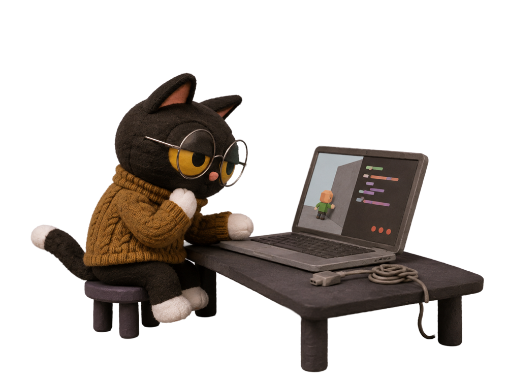
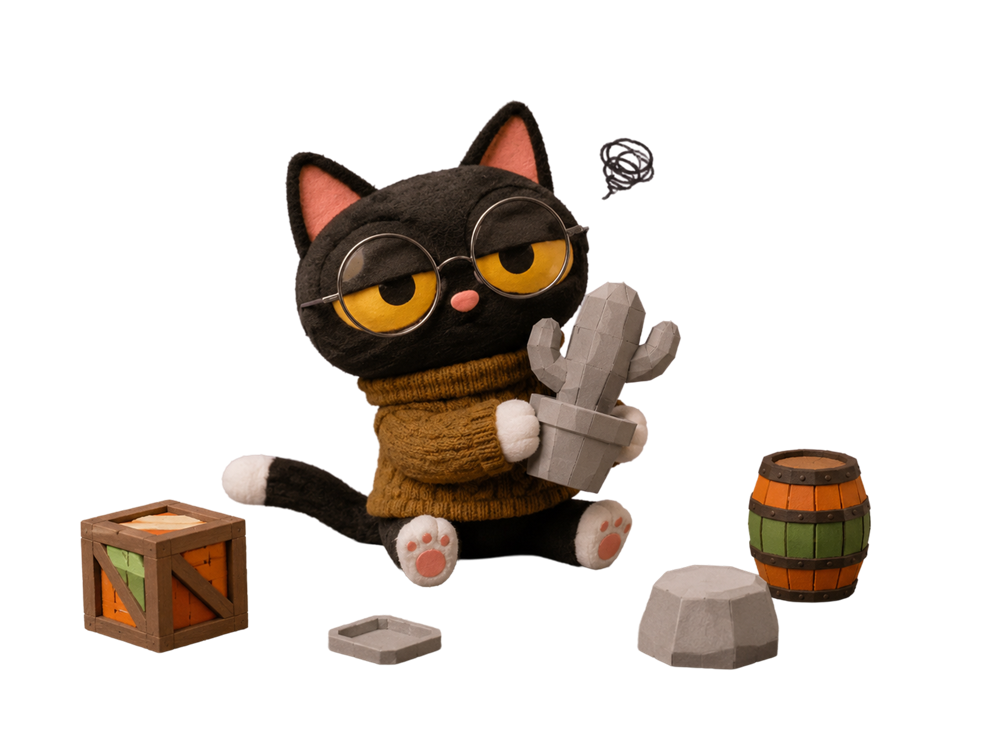

Wanaka
Anyone can build the game in their head — with AI as a teammate at every step.
Everyone has a game in their head.
Three walls keep it there.
Making a game takes three crafts most people never learned.



The idea stays an idea.
Let AI carry the crafts, so people only bring the idea.
Describe the game. A crew of AI cats takes each wall: Developer and Tester make it play, Artist makes it look right, Planner shapes the world. The creator directs.
Construction you can watch.
The game is the style guide.
Ask the right five questions first.
Three ways I design with AI.
Pulled from the three walls. Each one changed what a designer hands over.
Working demos instead of static mocks. The team reacts to the real thing, and the demo becomes the spec.
Taste written down as rules, references and contracts — so the product can make the call when I'm not in the room.
AI output → human sign-off → back into the library. Every good result makes the next one better.
Design for creators, with AI as the material.
Show a result before asking for effort — the same bar an effect creator has.
Skills and specs the product can run — how I'd approach effect templates and guidance.
Working demos over decks — what I'd bring to Effect House's tools and trends.